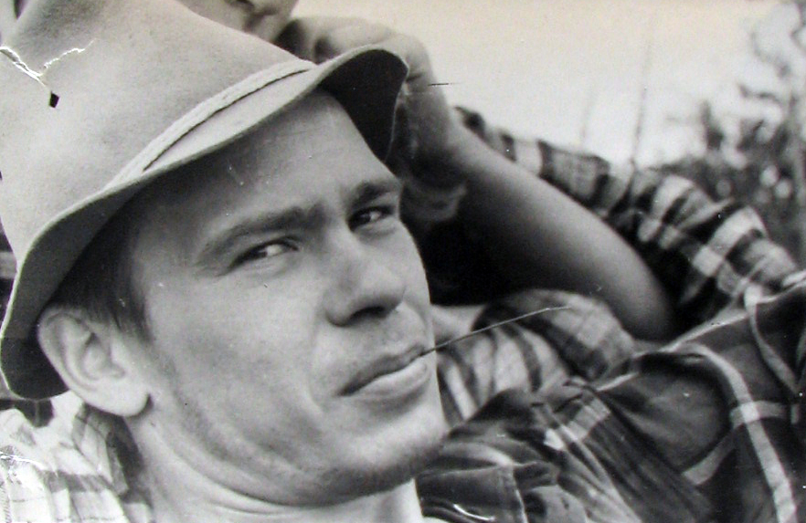
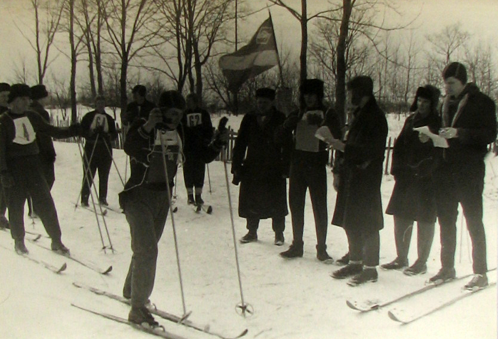
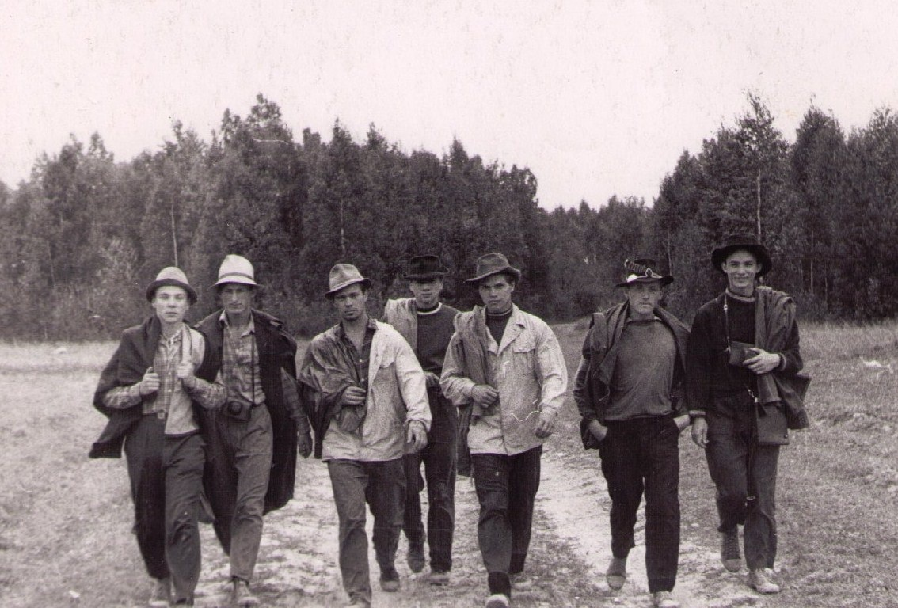
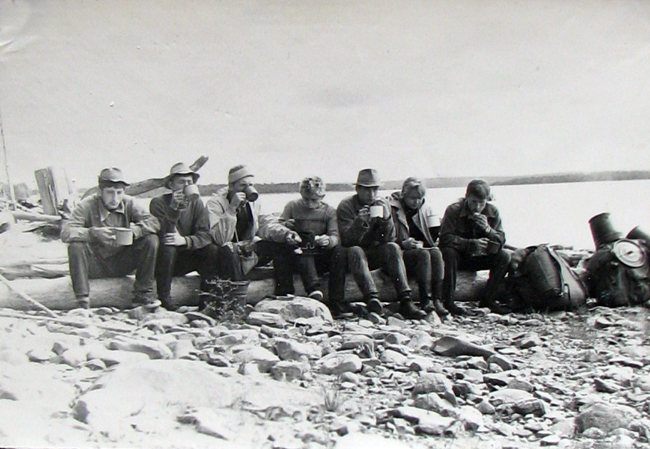

Начало туризма на Смоленщине (к пятидесятилетию первых туристских походов) // Материалы конференции «Туризм и региональное развитие» (в печати)
Г.П. Долженко,
В.Б. Козлов,
М.В. Николин
В 50-летний юбилей проведения первых туристских походов смолян по родному краю мы хотим познакомить читателей с чего и как начинался организованный туризм в Смоленской области. Все три автора предлагаемой публикации непосредственно находились у истоков туристского движения на Смоленщине и любовь к туризму пронесли через всю свою жизнь.
Начальный этап организованного смоленского туризма имеет точно фиксированное время – июль 1959 г., когда группа энтузиастов, сформированная отделом культуры областного совета профсоюзов, совершила туристское путешествие по озерному северу Смоленской области. Она открыла для туристов удивительной красоты уголок нашей Родины, и он через несколько лет стал местом паломничества для любителей первозданной русской природы, которые, вернувшись в свои пыльные города, благоговейно теперь произносят «Сапшо» - «Чистик» - «Бакланово» - названия сказочных смоленских озер.
Ожидаем недоуменного вопроса просвещенного в истории туризма читателя: «Так что же до конца 50 – х гг. XX в. такой культурный центр России как Смоленск не включался в деятельность ни одного туристского объединения? Ни Российского общества туристов, ни Всесоюзного общества пролетарского туризма и экскурсий? Ведь каждое из них охватывало всю страну».
Мы изучили разнообразный материал, касающийся истории российского туризма. Были проанализированы и отчеты РОТ, которые размещались на страницах его ежегодников. Российское общество туристов по численности своего состава было не постоянным. Рекордного количества членов – 2061- оно достигло в 1903 г. Но среди 174 российских городов, в которых проживал хотя бы один член РОТ, не встретишь Смоленска (Долженко , 1988).
Возродившееся после революции и гражданской войны Российское общество туристов едва достигло к 1928 г. (времени реорганизации его в Общество пролетарского туризма РСФСР) 500 членов (Антонов-Саратовский, 1930).
В конце 20-х гг. появились отделения РОТ в ряде городов, в которых они были созданы и до Октябрьского переворота: Ленинграде, Москве, Новосибирске, Астрахани, Ростове-на-Дону и других городах страны. Но Смоленск не упоминается среди них.
8 марта 1930 г. постановлением Совета Народных Комиссаров СССР было создано Всесоюзное добровольное общество пролетарского туризма и экскурсий (ОПТЭ), которое шесть лет руководило развитием туризма в стране. В изученных нами документах ОПТЭ сведений о туристской деятельности в Смоленской области обнаружено не было.
Поэтому мы считаем, что начальным периодом развития массового организованного туризма на Смоленщине следует признать конец 50-х – начало 60-х гг., когда Смоленский облсовпроф обратил на него серьезное внимание и были выделены средства на первые летние и зимние походы для подготовки инструкторов-общественников по туризму.
ТУРИСТСКИЕ ПОХОДЫ
Первый зимний инструкторский поход, также как и первый летний, проходил по северу области, точнее по ее северо-восточной части, по маршруту ст. Игоревская –Андреевское – Сычевка (183 км) в январе 1960 г.
В мае 1960 г. Облсовпроф финансировал еще один инструкторский поход по маршруту Смоленск – Бакланово-Слобода. К этому времени уже стало ясно, что основным полигоном пешеходного и лыжного туризма станет северный центр и северо-запад области.
Проведенные походы по подготовке инструкторов по туризму позволили сформировать при отделе культуры Облсовпрофа актив из числа их участников, людей, увлеченный идеей развития туризма в Смоленской области.
В сентябре 1960 г. областной совет ДСО «Труд», понимая что туристское движение не сможет дальше держаться только на энтузиазме общественников, вводит в свое штатное расписание должность «инструктора по туризму», и на эту должность зачисляет студента Смоленского института физической культуры (после окончания 3 курса) Геннадий Долженко. Он к этому времени уже являлся заместителем председателя областной секции туризма ( на общественных началах), созданной при Облсовпрофе.
Член сборной Смоленской области по фехтованию, которая в то время считалась одной из сильнейших команд в России, Г. Долженко решительно меняет свое достаточно понятное будущее спортсмена и тренера по фехтованию на туманное будущее «инструктора по туризму», совершенно не поддающееся никакому прогнозированию.

ФОТО. Геннадий Долженко – первый инструктор по туризму в Смоленской области (1960 – 1964 гг.), заместитель председателя Смоленского областного совета по туризму
В январе 1961 г. Долженко руководит очередным инструкторским походом по маршруту Семлево – Всходы - Дорогобуж – Сафоново. Исследуется еще один регион области как территория туристского пользования. Проведенные походы по подготовке инструкторов по туризму, финансированные Облсовпрофом, сыграли роль хорошо
спланированной акции по становлению туризма в области:
· во-первых, благодаря им, создался туристский актив, в который вошли и инженерно-технические работники, и рабочие, и студенты всех вузов Смоленска;
· во-вторых, туристские походы, совершенные в разных частях области, дали возможность сделать первую оценку ее туристских ресурсов.
ТУРИСТСКИЕ СЛЕТЫ
Зимой 1960/1961 гг. туристский актив Смоленска был увлечен подготовкой первого областного слета туристов. Нужно было решить массу вопросов, с которыми ранее общественники не встречались: финансирование (в отделе культуры смету слета признали фантастической, но в конце - концов ее подписали); снаряжение для организаторов, судей, участников; программа слета; проведение соревнований по ориентированию (топографическую карту достать было невозможно) и др.
Филигранная отработка всех вопросов, касающихся слета, не являлась самоцелью. Стихийно родилась концепция о слете как основном мероприятии по пропаганде туризма, и областной слет должен был стать эталоном для организаторов других – городских и ведомственных туристских слетов.
Для областного слета выбрали великолепное место на западном берегу озера Сапшо, южнее озовой гряды, протянувшейся вдоль его берега. 16 июня 1961 г. кавалькада автобусов с туристами предприятий и высших учебных заведений прибыла на место слета.
Соревновались команды в двух дисциплинах: полосе препятствий, отличавшейся большой сложностью, и ориентировании по выбору (команда из четырех человек должна была набрать наибольшее количество баллов за шесть часов).
После 1-го областного слета ряд предприятий, советов профсоюзов провели свои более скромные слеты, но имевшие большое значение для развития туризма на Смоленщине.
В 1962 – 1963 гг. были проведены следующие туристские праздники:
· Слет туристов Обкома профсоюзов текстильщиков
· Слет туристов г. Ярцево
· Областной слет туристов профсоюза строителей
· Слет туристов завода средств автоматики
· Слет туристов профсоюза работников электропромышленности
· Слет туристов города Смоленска «Золотая осень»
и другие.

ФОТО. Первое первенство города Смоленска по маркированной трассе (лыжне). 17 марта 1963 г. Дер. Красная горка Старт принимает В.Тюрин Крайний справа В. Козлов
Особо хочется отметить первенство г. Смоленска по маркированной трассе (лыжне), состоявшейся 17 марта 1963 г. Это было первое соревнование по зарождавшемуся в СССР спортивному ориентированию.
Старт приняло большое число сильных лыжников - перворазрядников, мастеров спорта, но чемпионом стал 15-летний Михаил Николин, представлявший известную в Смоленске туристскую секцию школьников «Ориентир». Его победа была определена умением читать топографическую карту и точно ориентироваться, чему он научился, занимаясь в секции.
ТУРИСТСКАЯ СЕКЦИЯ ШКОЛЬНИКОВ «ОРИЕНТИР» ОБЛАСТНОГО СОВЕТА ПРОФСОЮЗОВ
С целью пропаганды туризма среди школьников Смоленска и совершенствования методик организации и проведения походов с ними отдел культуры Облсовпрофа создал туристскую секцию школьников и предложил Г. Долженко стать ее руководителем, т.е. инструктором туризма-воспитателем. Средства отпускались только на походы, но их смета никогда не подвергалась сомнениям. Вся остальная тренировочная работа в течении года должна была вестись на общественных началах. Это было весьма заманчивым предложением для человека, одержимого идеей развития туризма на Смоленщине.

ФОТО. Члены туристской секции школьников «Ориентир» при Смоленском облсовпрофе. 1962 г. Третий слева руководитель секции Г. Долженко
За деятельностью секции постоянно наблюдали сотрудники отдела культуры, но никто не мог сказать уверено, что в ее работе следует изменить или исправить. В это время в стране практически не было специалистов в детско-юношеском туризме.
Впервые дисциплину «Туризм» начали преподавать в середине 50-х гг. на факультетах физического воспитания педагогических институтов как обязательный предмет. Выпускники института, прослушавшие курс «Туризм», были подготовленными к руководству туристскими секциями в школе. Смоленский педагогический институт не имел факультета физического воспитания, а в Смоленском институте физической культуры дисциплину «Туризм» преподавать начали с 1963 г.
Основное время в туристской секции использовалось для физического совершенствования ее участников. Кроссы, плавание в любую погоду, упражнения с отягощениями, многокилометровые походы выходного дня и, конечно же, многодневные туристские походы со значительным грузом, длительными дневными переходами.
Члены секции, кроме того, постоянно участвовали в подготовке и судействе соревнований по туризму, начиная с первого областного слета. Все хорошо разбирались в туристской топографии, могли провести занятия по спортивному ориентированию и по технике туризма. Основной целью занятий в секции Г. Долженко поставил подготовку широко образованных тренеров-общественников по туризму и спортивному ориентированию.
Секция «Ориентир» в 1963 г. задумала, подготовила и провела самостоятельно один из самых содержательных и красивых туристских слетов начального периода смоленского туризма – «Золотая осень». Задача подготовки профессионалов туризма из членов «Ориентира» была выполнена.
Начав в 8 классе счет своих походов с лыжного путешествия по югу Смоленской области, члены «Ориентира» летом после 10 класса, в 1964 г. самостоятельно, без своего руководителя, который не вовремя оказался в больнице, успешно совершили спортивный поход по Карелии.

ФОТО. Туристская секция школьников «Ориентир» в Карелии. 1964 г.
Члены маленькой туристской секции школьников (основной ее костяк составлял 12 человек), созданной отделом культуры Смоленского облсовпрофа, оставили заметный след в российском туризме, а также в исследованиях и использовании богатств природы.
Михаил Николин, будучи студентом геолого-географического факультета Ростовского государственного университета, стал одним из основателей школы спортивного ориентирования в РГУ и Ростовской области. Вернувшись в Смоленск он создал одну из лучших школ спортивного ориентирования в России.
Владимир Илларионов окончил геолого-географический факультет РГУ, участник ряда экспедиций в Индийский океан, защитил кандидатскую диссертацию по проблемам тектоники дна океана.
Владимир Бурченков окончил геолого-географический факультет РГУ, возглавлял Анюйскую горно-геологическую экспедицию в Билибино на Чукотке. Ему присвоено звание «Почетный разведчик недр».
Руководитель туристской секции Геннадий Долженко окончил после Смоленского института физической культуры геолого-географический факультет РГУ. В 1990 г. создал кафедру общей географии, краеведения и туризма. Его научное творчество отражено на персональном сайте gennadiy-dolzhenko.ru
Мы предприняли попытку восстановить историю первой волны зарождения организованного туризма в Смоленской области. Туризма, понимаемого всеми как походы пешком, на лыжах, велосипедах и других средствах передвижения, используя которые необходимо тратить физическую силу.
Но через два десятилетия, в конце 80-х – начале 90-х гг., началась история второй волны туризма - современного, коммерциализованного, организаторами которого являются коммерческие структуры – туроператоры и турагенты. Но это является темой другой публикации.
Литература
1. Долженко Г.П. История туризма в дореволюционной России
и СССР. – Ростов н/Д: Изд-во Рост. ун-та, 1988.
2. Антонов-Саратовский В.П. Беседы о туризме. Азбука советского (пролетарского) туризма.- М.-Л.: Госиздат, 1930.